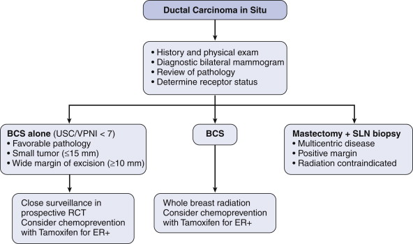
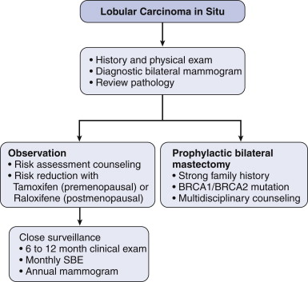

DCIS and LCIS
DEFINITION
TDLU - terminal duct lobular unit
- all breast cancer arises in
Ductal carcinoma in situ.
A pre-invasive local cancer (clonal proliferation of malignant
epithelial cells confined within basement membrane; precursor lesion
for invasive cancer) that is a highly curable disease with
appropriate therapy.
Lobular carcinoma in situ
Pre-invasive local cancer that is considered to be a marker of
increased risk of breast cancer development.
Recent data now suggests it is a precursor lesion to invasive
lobular carcinoma, and a risk indicator for IBC.
D E A B M I M
EPIDEMIOLOGY
DCIS
Increasing; 7x increase last 30y
50s-60s
- result of better detection and screening mammography
--> currently = ~20% of screen-detected breast cancers.
LCIS
Similarly increasing due to screening
Usually in 40s-50s
10 y earlier than DCIS
Only 10% seen with LCIS after menopause.
Often related to E-cadherin
D E A B M I M
AETIOLOGY
Tumour; malignant
DCIS
Rationale for pre-malignant risk is well established
- invasive cancer in untreated pts arises at or near DCIS foci.
--> must rule out associated invasive breast cancer (IBC) at dx
(present in 10-25%).
--> and prevent future IBC.
LCIS
Marker for increased risk for carcinoma.
D E A B M I M
BIOLOGICAL BEHAVIOUR
DCIS
Represents a spectrum of pathological lesions with variable
malignant potential
- potential is determined by histologic architecture, presence of
necrosis, and nuclear grade.
Bilateral in 10%
Sub-types
1. Comedo:
- central necrosis, many mitotic figures, and large pleomorphic
nuclei
- high grade, prognosis poorer
2. Non-Comedo (cribriform, papillary, Paget's):
- absence of central necrosis and mitotic figures, presence of
specific papillary, micropapillary or cribriform architecture
carcinoma.
- cribriform: cells in punched-out pattern; relatively low-grade,
better outcome
- papillary: fronds of cancer protruding in fibrovascular cores;
low-grade, better outcome
Paget's disease: extension up lactoferrous ducts to surface of
nipple/areola and invasion out to epidermal plane.
Nuclear grading
Low, intermediate or high
- determined by nuclear morphology and mitotic index.
- high grade = often associated with necrosis; aggressive, high
local recurrence rate.
Prognosis
Excellent, regardless of grade, 10-year survival exceeds 95%
LCIS
20-40% bilateral; 60% multicentric
Atypical lobular hyperplasia (ALH)
- morphologically similar but less well developed lesions
Subtypes
Classic and pleiomorphic
Classic
LCIS has monomorphic population of small, round, polygonal or
cuboidal cell wit a rim of clear cytoplasm and a high nuclear /
cytoplasmic ratio
- cells loosely cohesive and regularly spaced; Indian-file fill and
distend acini
- small nucleoli and a few mitotic figures.
- Pagetoid spread (extending along adjacent ducts) is frequent
Pleiomorphic
- cells with distinctly larger nuclei and prominent nucleoli
with frequent mitotic figures.
- central necrosis and calcification with lobules are common.
For a diagnosis of LCIS, >50% of acini in an involved lobular
unit must be filled and distended by LCIS cells; no central lumina.
- ALH is when characteristic cells fill half the acini with no
distension of the lobule; or mild distension with lumina visible.
Risk
Risk of developing IBC is 7-18x higher than the general
population.
- 7% 10y risk
- 30-40% lifetime risk
- 3x more likely in the ipsilateral breast.
- And 5x more likely to develop invasive lobular carcinoma
--> LCIS may be a precursor lesion to invasive lobular cancer and
a risk indicator for IBC.
--> this is supported by studies showing similar molecular
signatures in invasive lobular carcinoma and adjacent LCIS foci
D E A B M I M
MANIFESTATIONS
DCIS
Mainly screen detected
A few will show with a mass, Paget's disease of nipple or suspicious
nipple discharge
LCIS
Often an incidental finding after a breast biopsy performed.
- rarely visible on imaging
- no specific features.
INVESTIGATIONS
DCIS
Mammography
90-95% show up on screening mammography
- suspiciously grouped, pleomorphic, or fine, linear microcalcs.
--> do a mag view for indeterminant calcification.
Of all incidental calcification on screening mammo:
- 2/3 chance of pure DCIS
- 1/3 chance of DCIS with a focus of invasion
- little (4%) chance of invasive breast cancer.
Higher risk of IBC if:
- larger areas of calcification (>10mm)
- linear versus granular calcification.
Tissue
All need a tissue diagnosis
Stereotactic core needle biopsy is optimal diagnostic tool.
--> accurate staging without deforming operations.
Sometimes stereotactic core needle biopsy is not possible
- when close to chest wall, too superficial, close to implants, or
lacking sufficient tissue for compression views.
--> needle localized biopsy.
MRI
Evolving role
Mammogram is standard of care; MRI often misses small foci so cannot
replace.
LCIS
Incidence on otherwise benign breast biopsies is 0.5-4%
(generally not on screening as not calcified like DCIS)
Characteristically multifocal and bilateral
- over 50% have multiple foci in same breast
- 30% will have have LCIS in the contralateral breast.
--> multifocality in a clinically undetectable lesion means
LCIS is a challenging problem
Usually ER/PR+ve and HER2-ve
D E A B M I M
MANAGEMENT
DCIS
Controversies surround status as a 'true cancer', methods of
control,
Need to balance risk of local recurrence with unnecessary morbidity
--> therapy evolving with multimodal therapy and
less aggressive surgery.
Principles
1. Lumpectomy with radiation is appropriate for most
patients
2. Women with minimal disease and adequate margins can receive
lumpectomy alone
3. Women with extensive disease or large disease/small breast should
receive mastectomy with immediate reconstruction.

Surgical Therapy
Optimal treatment remains complete surgical excision to clear
margins with a cosmetically acceptable result.
- either breast conserving surgery (BCS) and radiotherapy
- or mastectomy
--> no RCTs to guide this, based on evidence from IBC;
--> non-controlled studies suggest that higher recurrence with
breast conservation but no change in survival.
Controversies include
- adequate margin size for excision
- need for radiotherapy after lumpectomy
- need for systemic therapy with hormonal agents
Ultimately decisions should be with patient and in MDT context
Mastectomy
Should be considered for multi-centric DCIS, large lesions, central
disease
and inadequate margins after repeat attempts of breast conservation.
Immediate reconstruction should be offered
- improved psychological outcomes and similar oncological outcome.
Margins
Controversial. No definitive data.
Best evidence suggests need at least a 2-3mm margin if adjuvant
radiation will be administered
- 1 mm is probably as getting rads.
Else perhaps a centimeter.
Further excision or possibly mastectomy indicated if margin <2mm.
Rads
Standard external beam radiation is typical.
- 3 prospective trials showing radiation reduces risk of developing
recurrent breast Ca.
--> but no clear survival advantage has yet been shown.
Partial breast radiation is investigational.
Sentinel node biopsy?
Indications include:
- extensive disease with core-biopsy diagnosis
- high-grade disease with or without a comedo component.
- evidence or suggestion of micro-invasion
- disease in subareolar area or upper outer quadrant
- treatment with mastectomy.
Adjuvant therapy?
Hormonal therapy available, specifically tamoxifen.
NSABP-B24 study suggests that for ER-positive DCIS, tamoxifen after
lumpectomy and radiation will reduce rates of ipsilateral recurrence
- and also reduces contralateral breast disease
Surveillance
1. Physical exam every 6 months for 5y then annually
2. Diagnostic mammogram annually.
- most recurrences occur close to the previous disease site
- local recurrence should be treated with negative margin resection
and radiotherapy
- and if recurrence includes IBC then systemic therapy as usual.
Lobular Carcinoma in-situ

Screen Detected
Controversy exists regarding need for excision after LCIS or ALH
detected on core biopsy
MDT approach required
1. Is there concordance or discordance?
2. Is there other high-grade lesions that will need excision?
--> If LCIS is a true incidental finding with no suspicious
features or discordance then excision is not necessary.
3. This is because the risk of IBC is 0.5-1% per year
--> low enough to not warrant resection
--> biology also tends to be more favourable
Positive Margins
When excised (e.g. in presence of another lesion), re-excision
is not necessary
- large studies have shown no increased risk in these patients when
followed.
Surveillance
1. Counsel the patient.
- advise them of the risk.
- with close surveillance and early pickup, death from IBC should be
unlikely.
- see flow diagram above for surveillance method.
2. Role of prophylactic mastectomy.
- special circumstances, e.g. women with BRCA1 or 2 or strong family
history.
--> immediate reconstruction ideal
3. Tamoxifen / Raloxifene
- chemoprevention of invasive and noninvasive breast cancer studied
in the STAR trial
- Tamoxifen decreased risk of IBC by 49% in all enrolled high-risk
women and 56% in LCIS
--> Raloxifene has a lower rate of thromboembolic complications
and uterine cancers cf tamoxifen
--> But tamoxifen better for preventing non-invasive breast
cancers.
Bottom line
Observation. Consider tamoxifen (raloxifene in postmenopausal
women) and prophylactic bilateral mastectomy in special cases.
D E A B M I M
REFERENCES
Cameron 10th